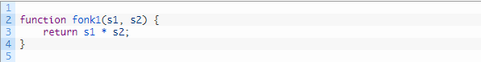
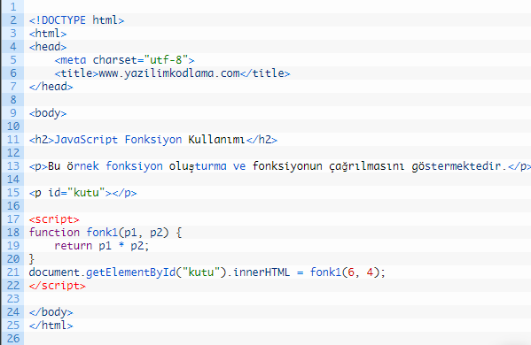
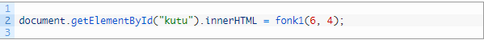
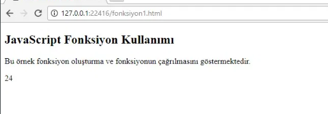
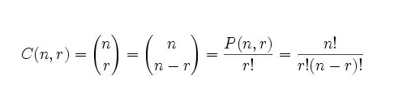

Fonksiyonlar belirli bir görevi yerine getirmek için tasarlanmış kod bloklarıdır. Hazırlanan fonksiyonlar çağrıldığında yürütülerek istenen görev gerçekleştirilir.
Fonksiyoların temel yapısı yukarıdaki gibidir. “function” anahtar kelimesi ile başlar. Daha sonra fonksiyona bir isim verilir. Yukarıdaki fonksiyonda fonk1 ismi verilmiştir.
Fonksiyonları yapacağı işe göre isimlendirmek kolaylık sağlayacaktır. Fonksiyon ismi verildikten sonra “( )” parantez açılır.
Parantezler virgüllerle ayrılmış parametre adlarını içerebilir: (parametre1, parametre2, …) Parametreler fonksiyon çağrıldığında fonksiyon tarafından alınan değerlerdir. Alınan bu değerler değişkenler gibi davranır ve fonksiyon içerisinde bu şekilde davranır.
{ } süslü parantezler içindeki kısım fonksiyonun çalıştıracağı kodlardır. Bu kodlar fonksiyon çağrıldığında çalışacaktır. Fonksiyonun çağrılması; Bir olay meydana geldiğinde (kullanıcı bir düğmeyi tıklattığında), JavaScript kodundan çağrıldığında, Otomatik olarak (kendiliğinden) olabilmektedir.
Fonksiyonda kullanılan return ifadesi fonksiyonun geri döndüreceği değer için kullanılır. return ifadesine ulaşıldığında fonksiyon duracaktır. Yukarıda fonk1 ismiyle oluşturduğumuz fonksiyonu incelediğimizde dışarıdan 2 adet parametre aldığını görmekteyiz (s1,s2) ve alınan bu iki değerinin çarpımının geriye döndürüldüğünü görüyoruz.
Şimdide oluşturduğumuz bu fonksiyonu nasıl çağırabileceğimize bakalım.
Yukarıdaki örnekte aldığı 2 parametreyi çarpıp sonucu döndüren fonksiyonun oluşturulduğunu görüyoruz.
Bu satır ile çağırdığımız fonk1 isimli fonksiyondan geri dönen değerin “kutu” isimli div içerisinde yazdırılmasını sağlıyoruz.
Yukarıda fonksiyon kullanımını en basit haliyle gördük. Fonksiyon kullanmaktaki amaç fonksiyon içerisine yazdığımız kodları defalarca kullanabilecek olmamızdır. Biraz daha açalım.
Yukarıda kombinasyon hesaplamak için gerekli formülü görmekteyiz. Biz bu işlemi fonksiyon kullanmadan yapan bir sayfa oluşturacaksak yani kullanıcıdan “n” ve “r” değerini alıp sonucu hesaplayacaksak 3 defa faktoriyel hesabı yapmamız gerekecektir.
(n!, r! ve (n-r)! )
Fakat biz faktoriyel alma işini bir fonksiyona yaptırırsak sadece kullanıcıdan aldığımız bu değerleri fonksiyona yollamamız yeterli olacaktır.